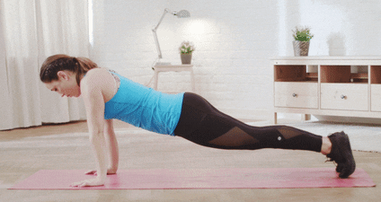
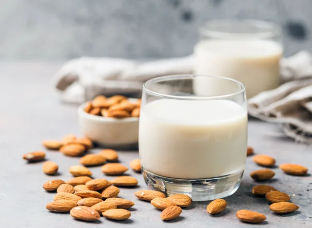

click hear for Information:
diet plain
REGULAR DIET ROUTINE
Follow this diet regularly,it helps you to increase your health and manitin a good healthylife
EXERCISES
IMPORTANCE OF EXERCISE
- Reduce feelings of depression and stress, while improving your mood and overall emotional well-being
- Increase your energy level
- Improve sleep
- Empower you to feel more in control
- RUNNING

- It Prevents Disease For women, running can actually help to lower your risk of breast cancer. It can also help reduce the risk of having a stroke. ...
- You Might Lose Weight Running is one of the best forms of exercise for losing or maintaining a consistent weight. ...
- Running Boosts Your Confidence Not all of the benefits of running are physical. Running can provide an noticeable boost to your confidence and self-esteem. ...
- It Relieves Stress Stress can actually cause a number of health and mood problems. It can also diminish appetite and sleep quality. ...
- Running has the Power to Eliminate Depression
- PUSHUPS

- Pushups are one of the most basic yet effective bodyweight moves you can perform because of the number of muscles that are recruited to perform them.
- Start in a plank position. Your core should be tight, shoulders pulled down and back, and your neck neutral.
-
Bend your elbows and begin to lower your body down to the floor. When your chest grazes it, extend your elbows and return to the start. Focus on keeping your elbows close to your body during the movement.
- Complete 3 sets of as many reps as possible.
- HIST

-
If you're over 30, it's likely that you don't have the time or inclination to spend more time in the gym.
Here's the thing about that: 30 is around the age that our metabolisms start to slow down.
Unless we keep our fat-burning machinery-muscle-stimulated, that is. "High-Intensity Strength Training (HIST) is ideal for anyone who has limited time and wants to stay lean and strong," says Alvin Rodriguez,
HIST expert and personal trainer for Living Proof Nutrition Strength Pilates.
PROTIEN RICH FOOD
FOOD PLAY THE MAJOR ROLE TO MAINTAIN HEALTHY LIFE
OATS
-
The soluble fiber in oats make them an overwhelmingly wise choice for breakfast or a snack.
"Oatmeal can help to manage cholesterol and blood glucose levels, two metrics that are associated with heart disease and diabetes," Reaver says.
Plus, that same fiber feeds your good bacteria, adds Anthony Youn, MD, a board-certified plastic surgeon in Troy, Michigan known for his non-surgical, anti-aging approach and TV appearances about holistic beauty.
"The trillions of bacteria that make up the microbiome are fed by prebiotics, mainly fiber-rich foods, so ingesting a sufficient amount of fiber is incredibly important as we age. Having a healthy microbiome is a key to staying healthy overall, inside and out.
A healthy microbiome results in healthy, more youthful skin as well," Youn says.
MILK

-
Milk is an excellent choice since you can keep it in your pantry for up to a year! One cup has 45 percent of the calcium you need each day, plus 25 percent of your vitamin D and 50 percent of your vitamin E quota," says Bonnie Taub-Dix, RD, creator of BetterThanDieting.com and author of Read It Before You Eat It:
Taking You From Label to Table.
"Use it in coffee (I like the chocolate here!), in smoothies, baking, sauces and more."